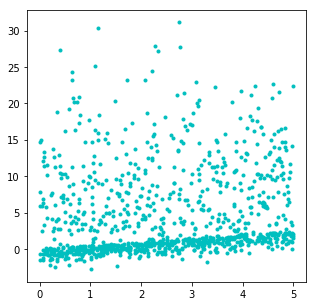
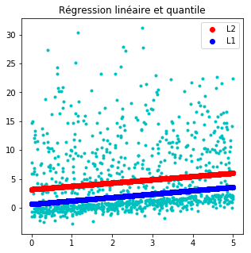
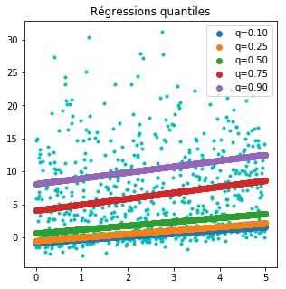

Régression quantile illustrée#
La régression quantile est moins sensible aux points aberrants. Elle peut être définie comme une régression avec une norme L1 (une valeur absolue). Ce notebook explore des régressions avec des quantiles différents.
[1]:
from jyquickhelper import add_notebook_menu
add_notebook_menu()
[1]:
[2]:
%matplotlib inline
Un jeu de données non symétrique#
[3]:
import numpy.random as npr
import numpy
n = 1000
eps = npr.normal(n)
X = npr.rand(n, 1) * 5
X1 = npr.normal(size=(n, 1)) * 1
X2 = npr.normal(size=(n // 2, 1)) * 10
X2 = numpy.vstack([X2, numpy.zeros((n // 2, 1))])
eps = -numpy.abs(X1) + numpy.abs(X2)
Y = (0.5 * X + eps).ravel()
X.shape, Y.shape
[3]:
((1000, 1), (1000,))
[4]:
import matplotlib.pyplot as plt
fig, ax = plt.subplots(1, 1, figsize=(5, 5))
ax.plot(X, Y, "c.");

Régression linéaire et régression quantile#
[5]:
from sklearn.linear_model import LinearRegression
clr = LinearRegression()
clr.fit(X, Y)
[5]:
LinearRegression(copy_X=True, fit_intercept=True, n_jobs=1, normalize=False)
[6]:
from mlinsights.mlmodel import QuantileLinearRegression
clq = QuantileLinearRegression()
clq.fit(X, Y)
[6]:
QuantileLinearRegression(copy_X=True, delta=0.0001, fit_intercept=True,
max_iter=10, n_jobs=1, normalize=False, quantile=0.5,
verbose=False)
[7]:
fig, ax = plt.subplots(1, 1, figsize=(5, 5))
ax.plot(X, Y, "c.")
lin = clr.predict(X)
ax.plot(X, lin, "ro", label="L2")
qu = clq.predict(X)
ax.plot(X, qu, "bo", label="L1")
ax.legend()
ax.set_title("Régression linéaire et quantile");

Différents quantiles#
[8]:
clqs = {}
for qu in [0.1, 0.25, 0.5, 0.75, 0.9]:
clq = QuantileLinearRegression(quantile=qu)
clq.fit(X, Y)
clqs["q=%1.2f" % qu] = clq
[9]:
fig, ax = plt.subplots(1, 1, figsize=(5, 5))
ax.plot(X, Y, "c.")
for k, v in sorted(clqs.items()):
p = v.predict(X)
ax.plot(X, p, "o", label=k)
ax.legend()
ax.set_title("Régressions quantiles");

[10]: